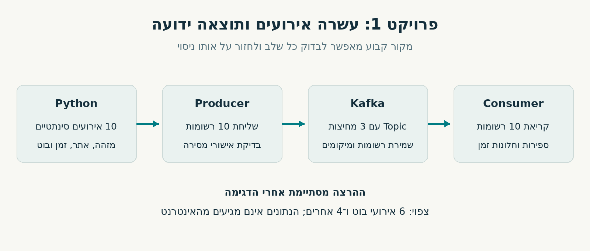
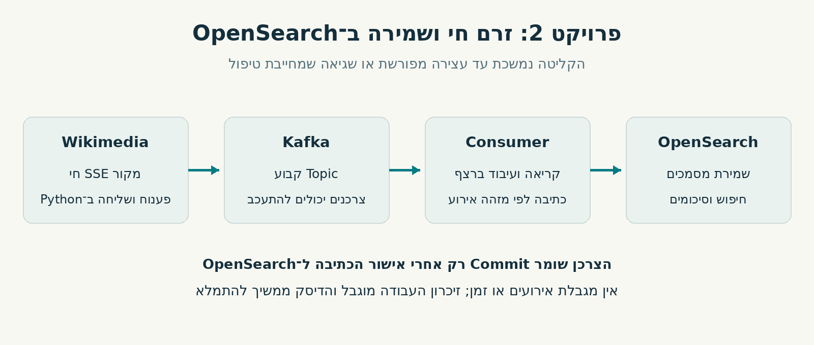

מתחילים כאן — Kafka מקומי ובענן
שלוש מחברות: יסודות עם עשרה אירועים ידועים, זרם Wikimedia מקומי, וגרסת אותו זרם דרך Confluent Cloud. סביבת העבודה: Cursor, uv ו־Python 3.13.12.
בוחרים מסלול לפי סדר הלימוד
| פרויקט | מה תלמדו? | מה צריך לפעול? |
|---|---|---|
| 01 — עשרה אירועים סינתטיים | Producer, מחיצות, Consumer, Replay, Commit וחלונות זמן עם תשובות ידועות. | Cursor, Python ו־Kafka. |
| 02 — Wikimedia Streaming אל OpenSearch | קליטה ועיבוד במקביל, שמירה לפני Commit, חיפוש והמשך מהרצה קודמת. | Cursor, Python, Kafka, OpenSearch וחיבור אינטרנט. |
| 3. Streaming דרך Confluent Cloud | אותו מקור Wikimedia ואותו יעד OpenSearch, עם Kafka מנוהל בענן וחיבור SASL/TLS. | Cursor, Python, חשבון Confluent Cloud ו־OpenSearch. |
הקישורים למחברות מצביעים לקבצים בתיקייה. כדי להריץ אותם, פתחו את כל תיקיית הפרויקט ב־Cursor ובחרו את המחברת בחלונית הקבצים. לפתיחת הוראות ההתקנה לחצו על מדריך התקנה מלא.
לפני ההרצה הראשונה
התקינו Git, Cursor, uv ו־Docker Desktop. ב־Cursor התקינו הרחבות Python ו־Jupyter. פתחו Docker Desktop והמתינו שהמנוע יפעל. במסוף מתוך תיקיית הפרויקט:
uv python install 3.13.12
uv sync --locked
uv run --locked python scripts/kafka_docker.py start
uv run --locked python scripts/check_kafka.pyבחרו במחברת את Kernel הפרויקט: Select Kernel → Python Environments → .venv. ב־Windows זהו .venv\Scripts\python.exe. פקודות המסוף אינן תאי Python.
פרויקט 1: מריצים ומבינים עשרה אירועים
פתחו את 01_Kafka_Synthetic_HE.ipynb, השאירו USE_KAFKA = True והפעילו Restart Kernel and Run All. כל הרצה מלאה מקבלת Topic חדש, אך האירועים עצמם קבועים.

תוצאה צפויה: עשרה אירועים נקראו, שישה בוטים וארבעה שאינם בוטים. Replay קורא את אותן רשומות בקבוצה חדשה. ניסוי ההתאוששות יוצר עשרה מסמכים אחרי 11 ניסיונות כתיבה.
המחברת הראשונה מסתיימת מעצמה. אם רוצים לתרגל ללא שרת, אפשר לבחור USE_KAFKA = False; אז הפלט מסומן OFFLINE ואין תקשורת אמיתית עם Kafka.
פרויקט 2: מפעילים OpenSearch וזרם רציף
הכינו את הזיכרון ואת הגדרת vm.max_map_count=262144 לפי סעיפי OpenSearch במדריך ההתקנה. לאחר מכן במסוף:
uv run --locked python scripts/opensearch_docker.py startפתחו את 02_Wikimedia_Streaming_OpenSearch_HE.ipynb. הריצו את ההגדרות, את בדיקת החיבורים ואת תא הזרם. השמות קבועים בין הרצות: Topic python.wikimedia.continuous.v1, קבוצת צרכנים python-wikimedia-opensearch-v1 ו־Index wikimedia-recentchanges-v1.

כל אירוע מתקדם עם הגעתו. הצרכן כותב ל־OpenSearch ומקבל אישור לפני שמירת ההתקדמות ב־Kafka. מזהה קבוע מאפשר כתיבה חוזרת לאותו מסמך.
MAX_EVENTS = None
MAX_SECONDS = Noneאין תקרת אירועים ואין תקרת זמן כוללת. תא הזרם נשאר פעיל בכוונה. תורי העבודה והמתנות הרשת כן מוגבלים. אין כאן איסוף של כל הזרם לרשימה בזיכרון.
כדי לעבור לשאילתות: לחצו על עצירת התא, המתינו לסגירה ובטלו את המשך Run All אם צריך. לאחר מכן הריצו ידנית את תאי הדוח, הספירה, החיפוש והסיכומים. אין צורך לאתחל את ה־Kernel.
אפשר לצפות בספירה גם בזמן הקליטה דרך עמוד count המקומי. מוני ההרצה אינם בהכרח ספירת מסמכים ייחודיים: ייתכנו כתיבות חוזרות או קריאה של backlog קודם.
מחברת 03: אותו Streaming עם Kafka בענן
פתחו את מחברת 03 לאחר ההכנה ב־מדריך Confluent Cloud. Kafka פועל בענן; Python רץ ב־Cursor, ו־OpenSearch נשאר מקומי. במסלול הזה מדלגים על הפעלת Kafka המקומי.
קובץ הדוגמה confluent-cloud.properties.example מגדיר את חמשת שדות החיבור. מכינים ממנו עותק מקומי בשם confluent-cloud.properties, שמוחרג מ־Git. התא הראשון במחברת טוען את ההגדרות בלי להדפיס את המפתחות.
עצירת המחברת אינה מוחקת משאבי ענן ואינה מפסיקה בהכרח חיובים. בסיום בדקו את המשאבים בחשבון הענן.
בסיום המעבדה
אחרי סיום תא הזרם, במסוף:
uv run --locked python scripts/opensearch_docker.py stop
uv run --locked python scripts/kafka_docker.py stopהמכולות נשארות במקומן ונתוני OpenSearch נשמרים ב־volume. בפעם הבאה משתמשים שוב בפקודות start. אותה קבוצת צרכנים ממשיכה מהמיקום התקף ששמרה; סמן Wikimedia שבזיכרון אינו משוחזר אחרי אתחול Kernel.
לשאלות על המושגים, התוצאות והמונים קראו את המדריך המפורט לשתי המחברות, או פתחו ב־Cursor את docs/NOTEBOOK_WALKTHROUGH_HE.md.
המחברת המשולבת Kafka_Python_Step_by_Step_HE.ipynb נשמרת לעיון בגרסה הקודמת. את השיעור מתחילים במחברת 01; ממשיכים ב־02 עבור Kafka מקומי או ב־03 עבור Kafka בענן.